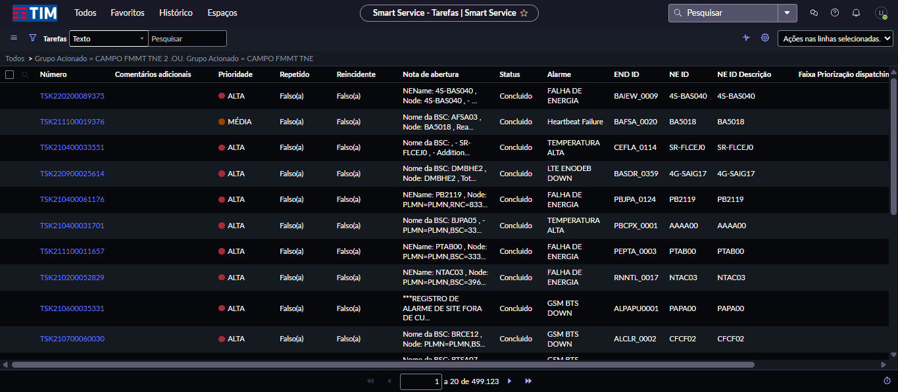
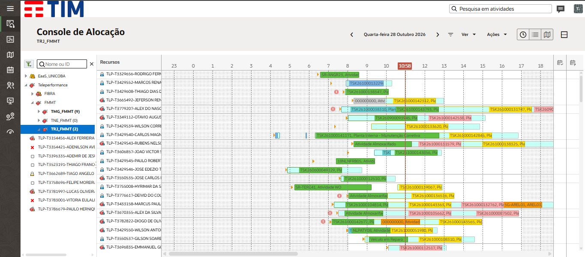
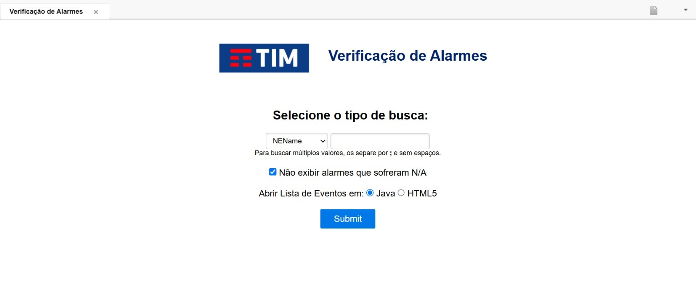
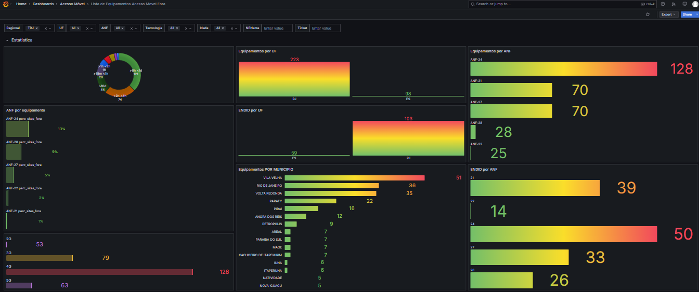
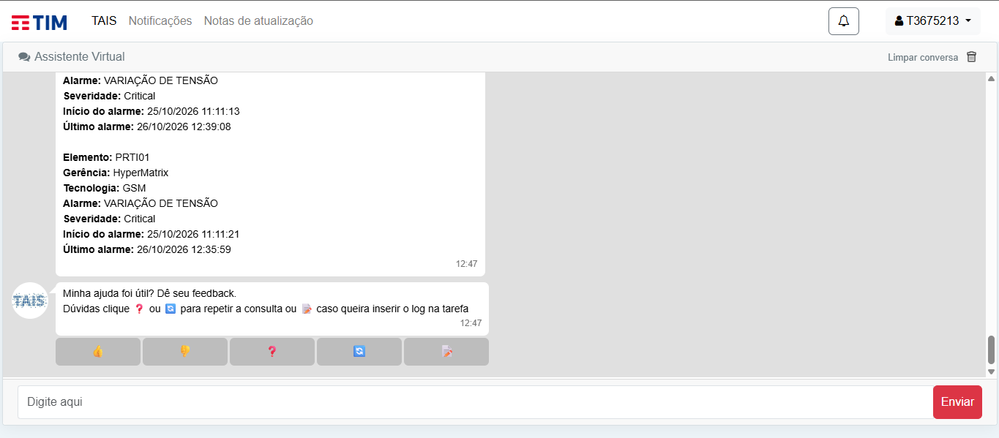
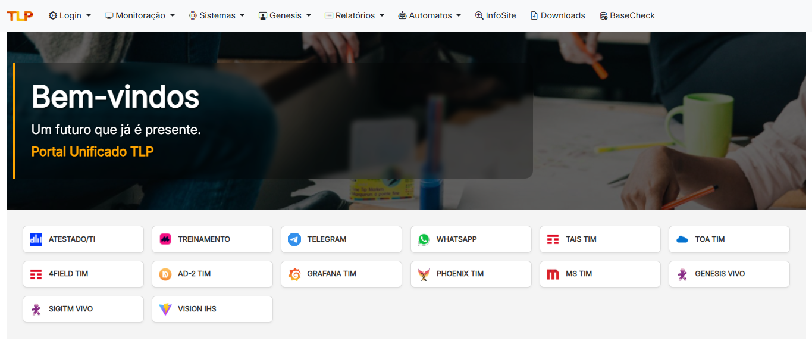
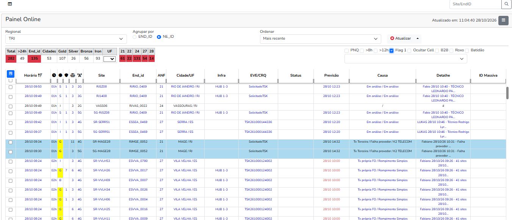

TIM
Smart Service
Sistema de tickets (ServiceNow). Cada chamado tem status, responsável e prazo. É aqui que se suspende, tramita e encerra.
Abra quando: precisar do histórico do ticket, atualizar status ou registrar evidências.
O que cada sistema mostra e quando abrir. Clique na tela para ampliar.

Sistema de tickets (ServiceNow). Cada chamado tem status, responsável e prazo. É aqui que se suspende, tramita e encerra.
Abra quando: precisar do histórico do ticket, atualizar status ou registrar evidências.

Gestão da força de trabalho: técnico disponível, onde está, rota e jornada.
Abra quando: for escolher quem acionar ou conferir se o técnico já saiu ou chegou.

Sites fora em tempo real: hora da falha, tempo de indisponibilidade, classificação, cidade e ticket.
Abra quando: confirmar o impacto (SI ou SD) e checar se há concentrador envolvido.

Gráficos e dados históricos para enxergar tendências da rede.
Abra quando: investigar reincidência ou comportamento de um site ao longo dos dias.

Chatbot de consultas rápidas: alarmes, histórico, endereço e backups do site.
Abra quando: precisar de uma informação pontual sem navegar por vários sistemas.

Plataforma interna: Painel Online (sites fora, causa, previsão, ID massiva), Monitora (SLAs, reincidências e falhas críticas por ANF), Auto Tracking (cruza Gênesis e tickets, agrupa massivas), Downloads, BaseCheck, InfoSite e Relatórios.

Visão consolidada dos sites fora com status, causa e previsão de normalização.
Abra quando: acompanhar o turno inteiro de uma vez só.
Alarmes ativos da rede. Integrado ao Smart Service, pode gerar ticket automático.
Backlog, eficiência e produtividade: os indicadores estão no verde ou no vermelho?
Análises do Suporte N2: o ticket vai para campo ou fecha remotamente.